1.
diversity: A diversity of electronic products allows customers to have more options.
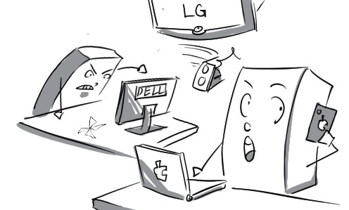
2.
hindsight: With hindsight, the teacher realizes that he taught a wrong lesson.

3.
implication: Contracting HIV is the most negative implication of heroin injection.
4.
impact: High food and fuel price has a negative impact on developing countries.

5.
influence: Continuous attacks on terrorists have enormous influence on many civilians.
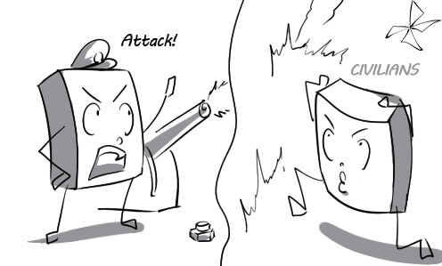
6.
joint venture: My company will establish a joint venture with a partner from Japan next year.

7.
monopoly: EVN held a monopoly in electricity production and distribution in Vietnam.

8.
modernisation: There has been a huge modernisation of audio player since it was invented.

9.
multiculturalism: Many different groups of immigrants contributed to the multiculturalism of American society.
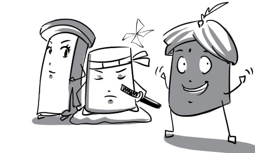
10.
projection: In order to make accurate projections, econimic planners must have sufficient information.

11.
proportion: The proportion of boys to girls in my class is 2 to 1.

12.
statistic: According to official statistics, the elderly make up 38% of the population.
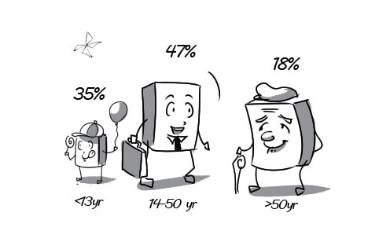
13.
exotic: The local people found exotic guests very strange and bizarre.
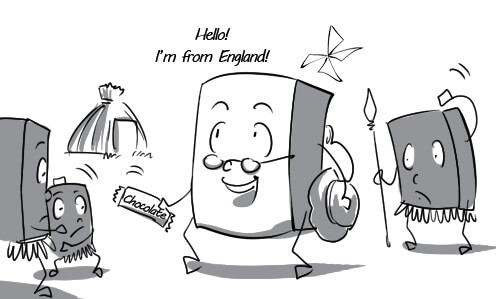
14.
productive: The farmer succeeded in growing productive fruit trees.

15.
sceptical: The recruiter is deeply sceptical about Tom's résumé because it is too good to be true.

16.
subsequent: Diarrhea is usually subsequent to eating too much at once.
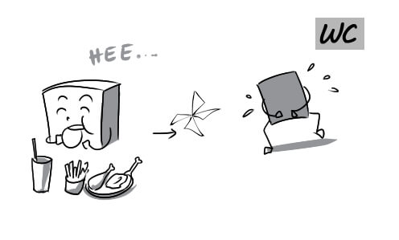
17.
compound: Carelessly chemical compounding can cause explosion.

18.
decline: Alan felt really disappointed when his girlfriend declined his marriage proposal.

19.
diminish: The total area of forests has been diminished remarkably over recent years.
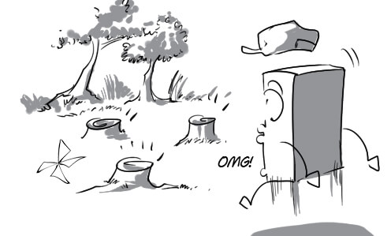
20.
dominate: US army has dominated the battle thanks to modern technique.

21.
dwindle: His company's market share has dwindled gradually since his competitor launched a new line of products.

22.
migrate: Millions of birds migrate south when winter is coming.
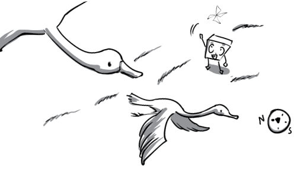
23.
acid rain: Acid rain causes slower growth, injury or death of forests.

24.
biodiversity: Vietnam has been recognised as a nation with high biodiversity.

25.
contamination: Many factories cause contamination to the air we breath.
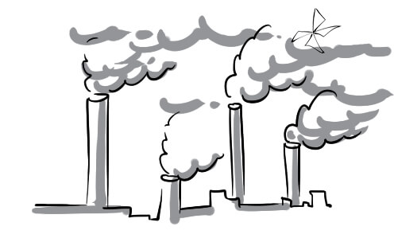
26.
deforestation: Vietnam has the second highest rate of deforestation of primary forests in the world.
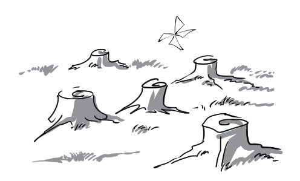
27.
disposal: Tom does medical garbage disposal very carefully.
28.
drought: Crops have failed because of drought.

29.
emission: The light emission of the headlight is really strong.

30.
erosion: Soil erosion is one of the most severe consequences of deforestation.

31.
exhaust: Cars are spewing out black clouds of exhaust.

32.
flood: The flood rose so high that everyone had to climb onto the roofs of their houses.

33.
food chain: This food chain always consists of many creatures.

34.
fumes: Tobaco fume is 60 times more toxic than traffic smokes.
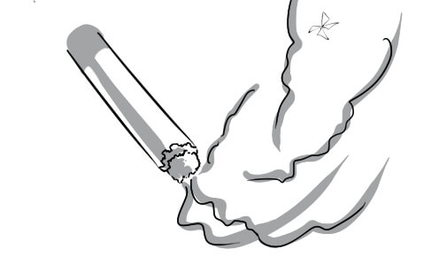
35.
pollutant: There were so many pollutants in the air that everyone had to wear a safety mask.
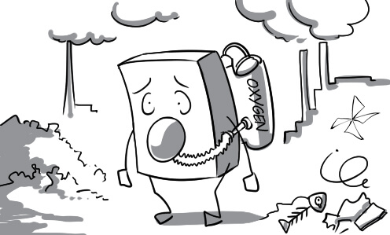
36.
refuse: They gather refuses from the whole city here.
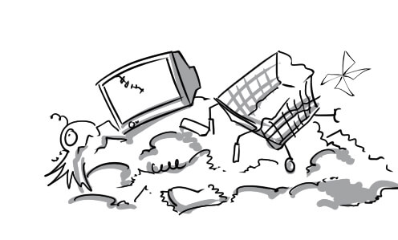
37.
strain: Studying long hours puts an enormous strain in my head.
38.
threat: Trees are under threat from industry development.
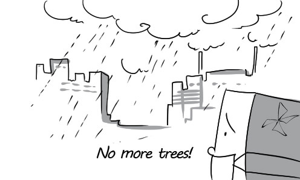
39.
achievable: An abundant main crop is achievable if you have high quality seeds.
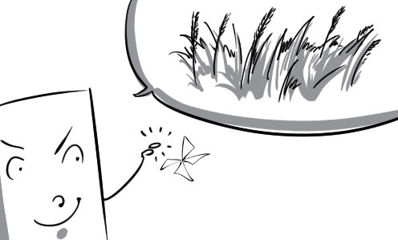
40.
advantageous: Farmers are very pleased because weather conditions are advantageous to the crops.

41.
at risk: A dangerous thief gets into Anne’s house while she’s sleeping. Anne is really at risk.

42.
beneficial: Drinking milk regularly is beneficial for children height.
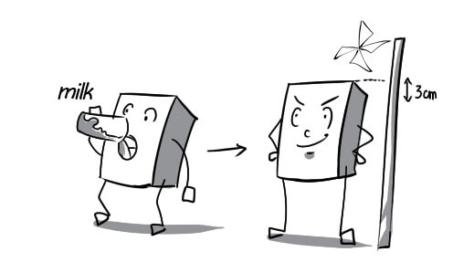
43.
chronic: Lying has become a chronic habit of John, he never tells the truth.
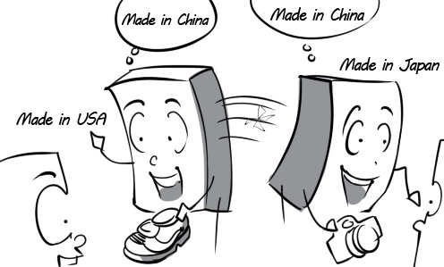
44.
conceivable: Tom sleeps all the time, and forgets watering the plants. So the plants' withering is conceivable.

45.
devastating: Hurricane Katrina is one of the most devastating disasters in the US.
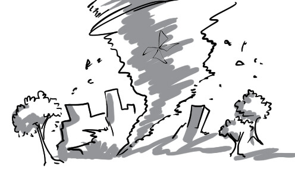
46.
environmentally friendly: Solar energy is an environmentally friendly and non-pollutant energy source.

47.
feasible: The green world for future is still feasible if we try together.
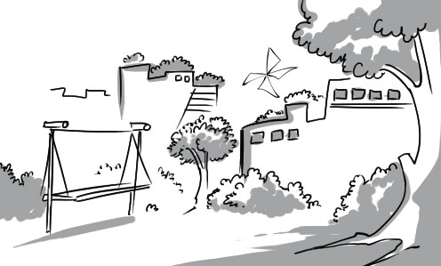
48.
fruitless: Jake is very sad because his attemps to grow a bed of flowers were fruitless.
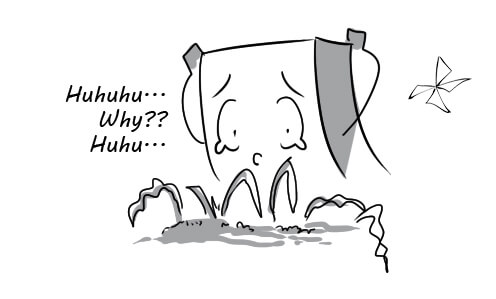
49.
futile: The atmosphere is so polluted that wearing a safety mask becomes futile.

50.
immune: A healthy body will be immune to many kinds of viruses.

51.
impracticable: It is impracticable to ask a normal man to lift a 2 ton rock.
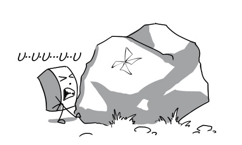
52.
improbable: It is improbable to expect a tree to grow fully in 10 days.

53.
in danger: Jesse really put his life in danger when he volunteered for a knife throwing performance.

54.
insoluble: Their conflict seemed insoluble. I don't know how to settle it.
55.
irreparable: Ryan tears the very valued painting, that mistake is irreparable.
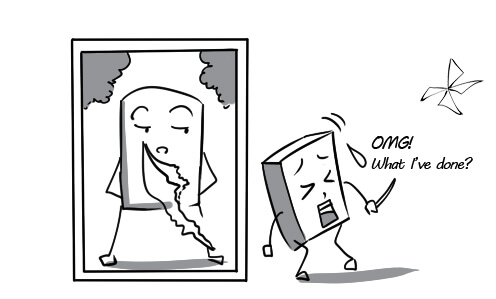
56.
irreplaceable: This vase is irreplaceable because it is the remembrance of my dead grandma.
57.
irreversible: The growth of a tree is an irreversible process.
58.
liable: The environmental pollution is liable to be solved if all the countries support each other.

59.
life-threatening: Being alone on a small island with sharks around, he's in a life-threatening situation.
60.
pervasive: Toxic waste is pervasive and kills all the living beings in the river.

61.
pointless: It is pointless to wear thin boots if you want to walk on toxic wastewater.

62.
pristine: I wish our environment could turn back to its pristine situation where there is no pollution.

63.
questionable: The acid bottle smells like chocolate. It's questionable.

64.
recyclable: Bottles and cans are some of recyclable household wastes.

65.
taxing: Forest recovery is such a taxing task that it cannot be accomplished in a short time.

66.
unattainable: It is an unattainable goal to grow a 800 m tree.

67.
unprecedented: The tree can talk? Are you sure? That's an unprecedented fact!
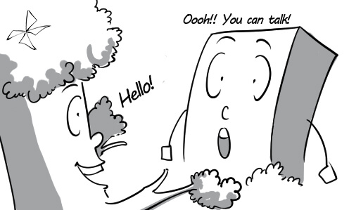
68.
attitude: Nobody can stand his bad attitude.
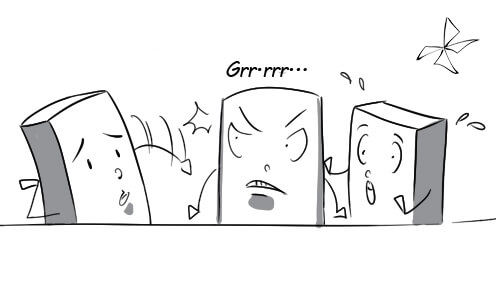
69.
brand: Blueway determined to become a leading brand in education and informatics field.
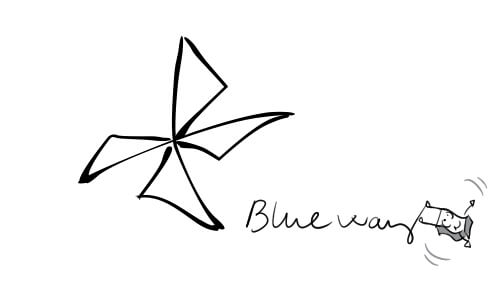
70.
culture: Ao dai plays an important role in Vietnam culture.
71.
cycle: No one can change the life cycle of birth, aging, illness and death.
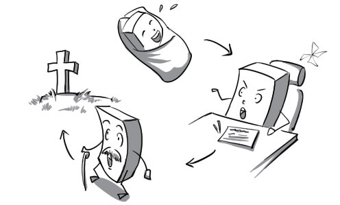
72.
demographics: The demographics show a remarkable increase in the world population in the past few decades.

73.
development: After 3 years of living abroad, Mr Tran is amazed with the rapid development of Ho Chi Minh city.

74.
icon: The wine glass icon indicates that the products are really fragile.
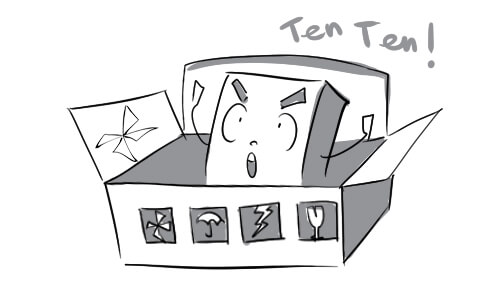
75.
identity: You have to show your identity card before entering the laboratory.

76.
increase: The world population has increased to 7 billion in 2011.
77.
industry: Industry is a major contributor to air pollution in developed countries.
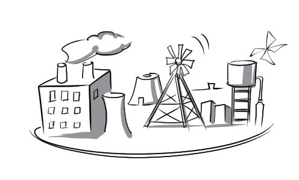
78.
isolation: Isolation from managers can make CEOs suffer from a lot of stress.

79.
market: The market is always full of buyers and sellers.

80.
percentage: The percentage of correct answers is twice as high as that of wrong answers.

81.
population: The population is unevenly distributed throughout Vietnam.
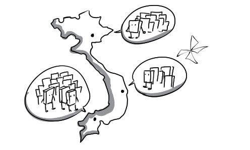
82.
prediction: Weather predictions are very helpful for farmers.

83.
rate: The police are trying their best to reduce the crime rate.
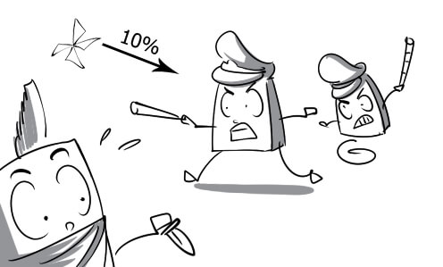
84.
trend: Cycling to work is a trend of many people to keep the world green.

85.
age: As he aged, his skin got wrinkly.
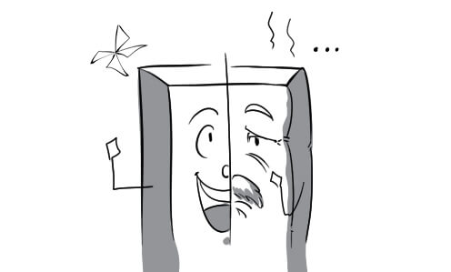
86.
current: Some current fashion trends are inspired by traditional costumes.
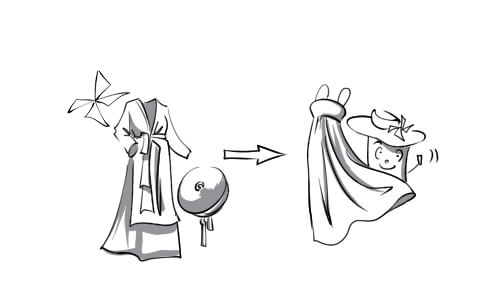
87.
elderly: Even elderly men cannot resist her youthful charm.
88.
ethnic: Japanese ethnic culture is famous for Samurai spirit.

89.
global: Global telecommunication helps connect people all over the world.

90.
local: When you passed this direction sign, you entered the local territory.
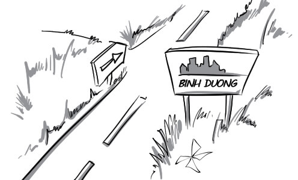
91.
long-term: Peter's long-term career goal is to become a head chef.
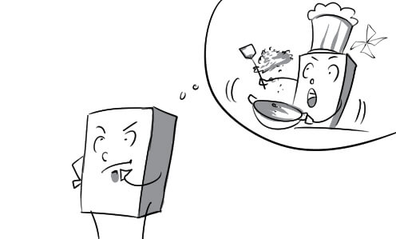
92.
mid-term: His mid-term life goal is to have a house where he can live comfortably.

93.
short-term: His short-term goal is just to earn enough money to support himself.
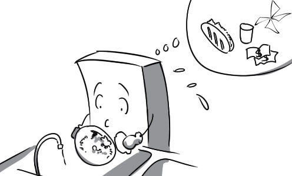
94.
wealthy: The wealthy businessman spent thousands of dollars a month on his servants.
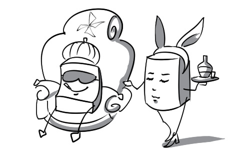
95.
worldwide: I chose this dealer to help me because of his worldwide reputation.

96.
contribute: My school contributed a lot of necessities to the national campaign for disaster relief.

97.
factor: You should factor all the extra expenses in when you plan to build a new house.

98.
indicate: The teacher's attitude indicates that he has doubts about Ryan.
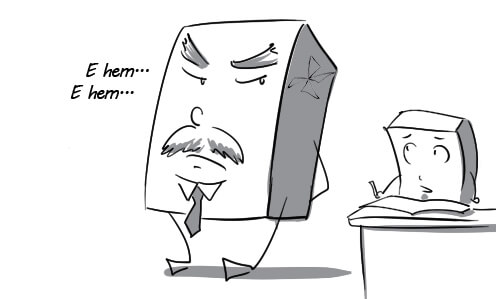
99.
merge: In my opinion, a laptop is simply a computer merged with a bag.

100.
climate change: Billions of people are already encoutering the impact of climate change.

101.
ecosystem: The central region of Vietnam has the richest ecosystem in the country.

102.
environment: I really enjoy living in the countryside because of its pure environment.

103.
fertilizer: It is recommended to use organic fertilizer to help plants grow strong and healthy.
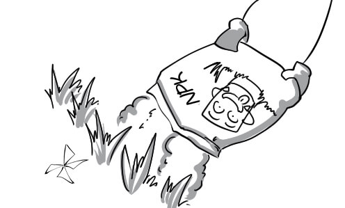
104.
greenhouse gases: Carbon dioxide is one of the most abundant greenhouse gases in the earth's atmosphere.

105.
process: The maturing process of a rubber tree can take at least 5 - 7 years.
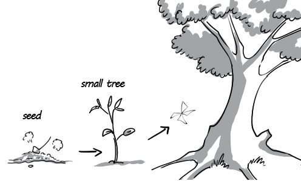
106.
waste: Garbage trucks dump tons of waste at the landfill site everyday.

107.
doubtful: I am doubtful of the news about air quality in Ho Chi Minh city.
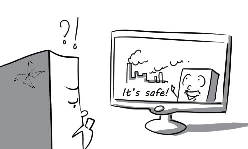
108.
sustainable: Although this region develops very fast, it still achieves a sustainable growth of its forest area.
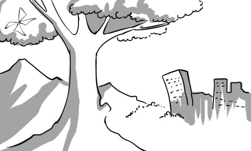
109.
unlikely: This small apple tree is unlikely to produce 100 apples.